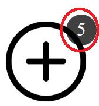

Choisir une difficulté
Le but du jeu est de marquer le plus de point en éliminant des chiffres de la grille.
Les chiffres s'éliminent si on sélectionne une paire ou si la somme des chiffres fait 10.
>Les sélections peuvent être horizontales, verticales ou en diagonales.


La fin d'une ligne est le début de la suivante.

Vous avez 5 ajouts de chiffres par grille pour vous aider

une combinaison de chiffre qui se touchent vaut 1 point
une combinaison de chiffre qui ne se touchent pas vaut 4 points


la suppression d'une ligne vaut 10 points
vider la grille vaut 150 points et chaques vie restantes donne 50 points
vider la grille fait augmenter le multiplicateur de point
utiliser l'aide coûte les points d'une ligne sauf si la seule action possible est d'ajouter des chiffres